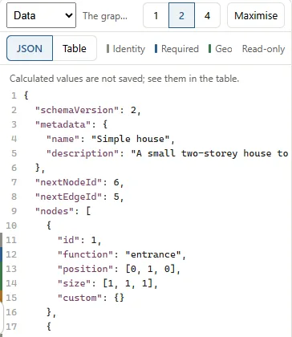

Page 6 of 15 · On your computer
About the repository
Exercise 2 is your own toolkit. It lives in the course repository, on your computer and on GitHub.
01What a repository is
A project folder with its whole history.
What a repository is
A project folder with its whole history.
A repository is a folder of files plus every saved change to them. It is kept on GitHub; you work in a copy on your computer and send your changes back.
02Why you need it
Your toolkit lives there.
Why you need it
Your toolkit lives there.
Your toolkit is one folder in the repository. There the app can run it on your computer, and the course can check it and open it: GitHub checks every change you send.
03Where it is
The course's copy on GitHub.
Where it is
The course's copy on GitHub.
https://github.com/HME-Research/spatial-graph-lab-course
More: a fork
It is the course's own copy (a fork) of the Spatial Graph Lab repository, so your work never touches the original.
04main and your branch
The course's version, and your own line of work.
main and your branch
The course's version, and your own line of work.
mainis the course's version. You never change it.- Your branch,
toolkit/u123-hk-housefor example, is your own line of work. You make it on page 09.
05The folders
Only your own folder may change.
The folders
Only your own folder may change.

toolkits/u123-hk-house/.What each folder is
| Folder or file | What it is |
|---|---|
toolkits/<your-toolkit-name>/ | Yours: your toolkit. |
toolkits/house/ | The House example: read it, copy from it, never change it. |
lab/ | The app itself. |
tutorial/ | These pages. |
README.md, AGENTS.md, CLAUDE.md | What the repository is; the rules a coding agent follows. |
package.json, package-lock.json, tsconfig.json, … | How the app is built and which tools it needs. |
Why only your folder?
Everyone works in the same repository: a change elsewhere would change the app for the whole class. GitHub marks a branch that changes other files with a red ✗.
06Folders only on your computer
node_modules/ and dist/: leave them where they are.
Folders only on your computer
node_modules/ and dist/: leave them where they are.
Don't move, delete or commit them. node_modules/ appears when you run npm ci, and dist/ when the app is built.
Why?
node_modules/ holds the tools the app needs to run on your computer: without it, the app does not start. Git ignores both folders, so they never reach GitHub and never show up in git status.
07Where your designs go
Project files you export, and your toolkit's own designs.
Where your designs go
Project files you export, and your toolkit's own designs.
- A design you make in the app is part of a project file you export (Project › Export project). Keep it somewhere safe, outside the repository.
- Your toolkit's example designs, including its default design, live in your toolkit folder:
toolkits/<your-toolkit-name>/designs/.
A design you drew in the app as an example design of your toolkit
- Draw it in the app with your toolkit active.
- Project › Export project: a
.project.jsonfile lands in Downloads. It holds each scenario's design. - Give that file to your coding agent or chat and ask: “Take the design of the scenario name from this project file and give me it as
designs/my-design.jsonfor my toolkit, with ametadata.nameandmetadata.description.” - Put the new file in
toolkits/<your-toolkit-name>/designs/(never the.project.jsonitself), then check, commit and push.
The design's text is also in the app: a panel's view list › Data › JSON.

08What comes next
The pages of Exercise 2, in order.
What comes next
The pages of Exercise 2, in order.
- Install the tools: accounts and programs, once.
- Clone the repository: the course folder on your computer, the app running.
- Make your branch and plan your toolkit.
- Make it with a coding agent or a chat assistant.
- Hand it in.
Public. The course repository is public: your branch, your README and your commit name can be read by anyone. Put no full student number, passwords or keys in them.